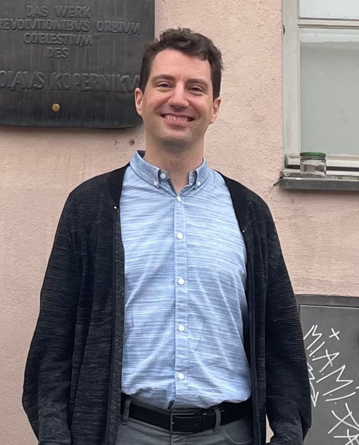

ScaDS.AI, TU Dresden 📧 michael.faerber@tu-dresden.de.
| Welcome! I’m Michael Färber, a full professor at ScaDS.AI, TU Dresden, Germany. Our group focuses on AI research that prioritizes trustworthiness and alignment with human values. We work at the intersection of natural language processing (NLP), particularly large language models (LLMs), graph-based machine learning, and structured knowledge representation (e.g., knowledge graphs). In addition to core AI research, we actively explore applications in scientific domains, such as large-scale information extraction, knowledge curation, and AI-assisted scientific discovery. For collaboration, feel free to reach out via email 📧 Explore our latest openings, thesis topics, and publications. |
 |
| Apr 01, 2026 | The SAB-funded research project AICOM started today! |
| Jan 01, 2026 | The BMFTR-funded Software Campus project EVIDENZ started today! |
| Nov 01, 2025 | Junior PostDoc position available; apply now to join our team! |
| Nov 01, 2025 | Senior PostDoc position available; apply now to join our team! |
| Sep 19, 2025 | Three papers have been accepted at EMNLP 2025 ! See you in Suzhou, China! |